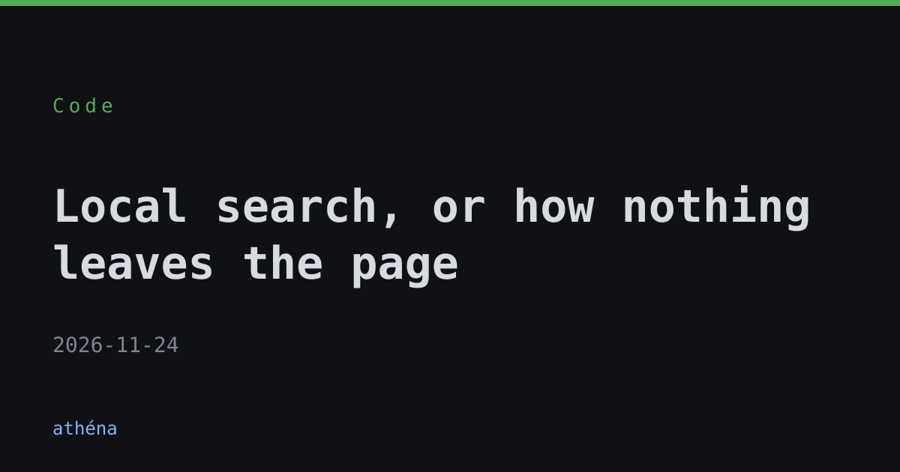

Local search, or how nothing leaves the page
The journal.json index, filtering in the browser, and measured positive (3 of 6) and negative (0 of 6) cases run against the real widget.
The idea
The journal is a static site: no application server, no database, no form.
Search is therefore a widget, not a service. Two files are enough —
noyau/gabarits/journal.html puts the field and the data in the page, and
noyau/widgets/recherche.js does the sorting once the document has loaded.
The journal.json index
The engine writes it at build time, inside moteur.publier_meta(): as soon as
an article exists, it calls index_journal() and serialises the result into
dist/journal.json. Nothing is typed by hand.
Each entry holds titre, description, date, langue, url, categorie,
tags, temps, mots and texte — the last being the article’s HTML with
the tags removed, whitespace collapsed, truncated to 600 characters. Measured
on the current build: 12 entries (6 French, 6 English), including this
article. The index is offered as a link in the journal masthead, next to the
feed.
Filtering happens in the browser
The template builds a data-cles attribute for every article by concatenating
the title, description, category and tags, all lowercased:
data-cles="{{ (a.titre ~ ' ' ~ a.description ~ ' ' ~ a.categorie ~ ' ' ~ (a.tags | join(' '))) | lower }}"
The widget only reads that attribute. The matching rule is one line:
cles.indexOf(q) !== -1, with q = champ.value.trim().toLowerCase(). It is a
substring, not a word search: no tokenising, no stemming, no accent fallback.
On each keystroke maj() hides the lines that do not match, updates the
counter (3 / 6) and shows or hides the message « No article matches. »
(default pagination of 8 applies after filtering).
Measured positive and negative cases
I ran the real noyau/widgets/recherche.js (byte-for-byte identical to
dist/assets/widgets/recherche.js) under Node 20.19.2, with a stub DOM fed by
the actual data-cles values from the built dist/en/journal/index.html. The
source file and the served file are the same, and the data are the site’s own.
FR, 6 articles in the DOM
q='preuve' -> visible=3 counter='3 / 6' emptyHidden=true
q='vérificateur' -> visible=1 counter='1 / 6' emptyHidden=true
q='verificateur' -> visible=0 counter='0 / 6' emptyHidden=false
q='xyznonexistent123' -> visible=0 counter='0 / 6' emptyHidden=false
EN, 6 articles in the DOM
q='proof' -> visible=3 counter='3 / 6' emptyHidden=true
q='xyznonexistent123' -> visible=0 counter='0 / 6' emptyHidden=false
Positive case: preuve brings back 3 of 6 articles in French, proof 3 of 6 in
English, and the empty message stays hidden. Negative case: a string absent
from the index gives 0 / 6 and shows the message. The verificateur case is
the most instructive: the article « The verifier… » does exist, but typed
without its accent it does not come back; with the accent, it does. The search
is faithful to its rule — and that rule is narrow.
What never leaves the page
Exactly one network request was observed during the whole simulation: a GET of
../journal.json at page load, before the first keystroke. Four successive
typing queries added none. The widget contains no form, no XMLHttpRequest and
no external URL; neither does the template. The string typed stays in the
browser’s memory: it is not sent, logged or stored. The only bytes crossing
the boundary are the static index file, served by the same site.
Documented limit, verified in the code: the downloaded JSON is indeed received
in the index variable, but maj() never reads it back — filtering relies
only on the DOM. The widget’s comment (« the full index is used beyond the
first displayed ») describes an intention rather than a behaviour: here all 6
articles are already in the page at load (0 hidden, default pagination of 8),
and the index is never consulted. To fix or to remove in a later task; no code
was changed in writing this article.